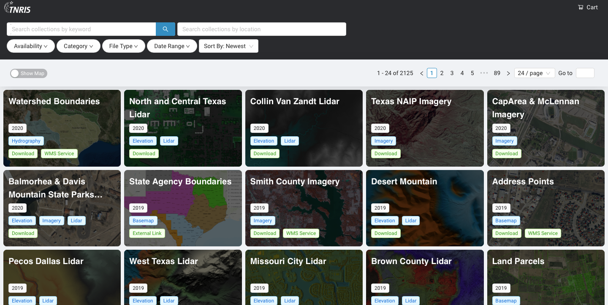
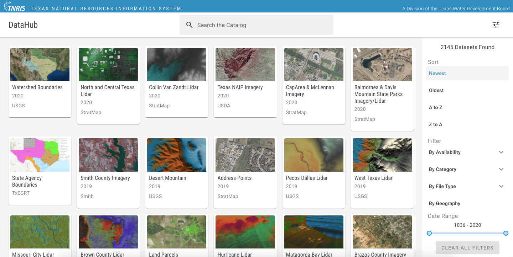
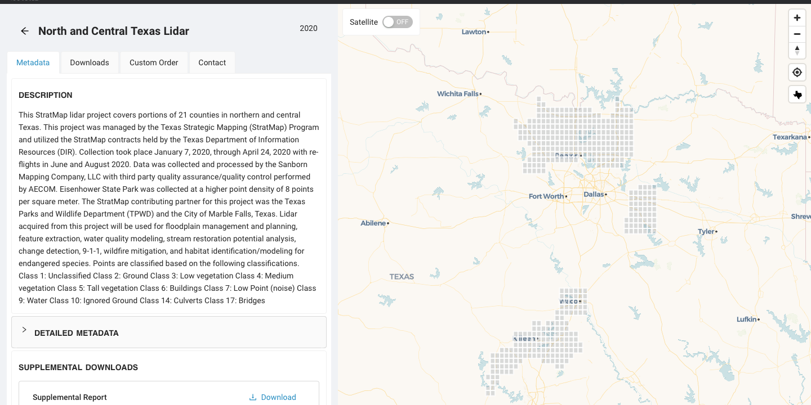
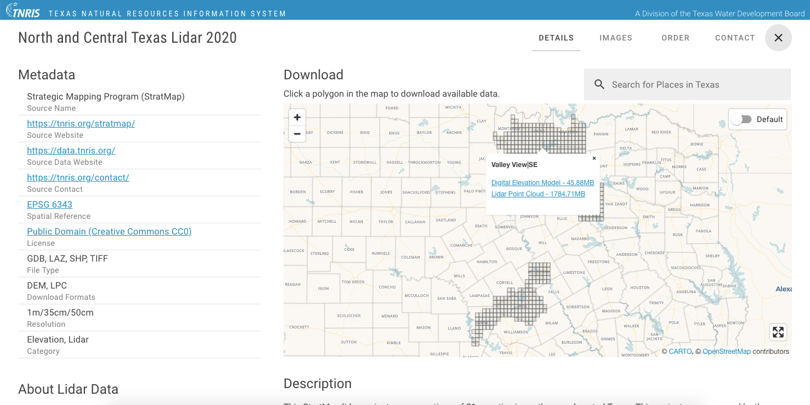
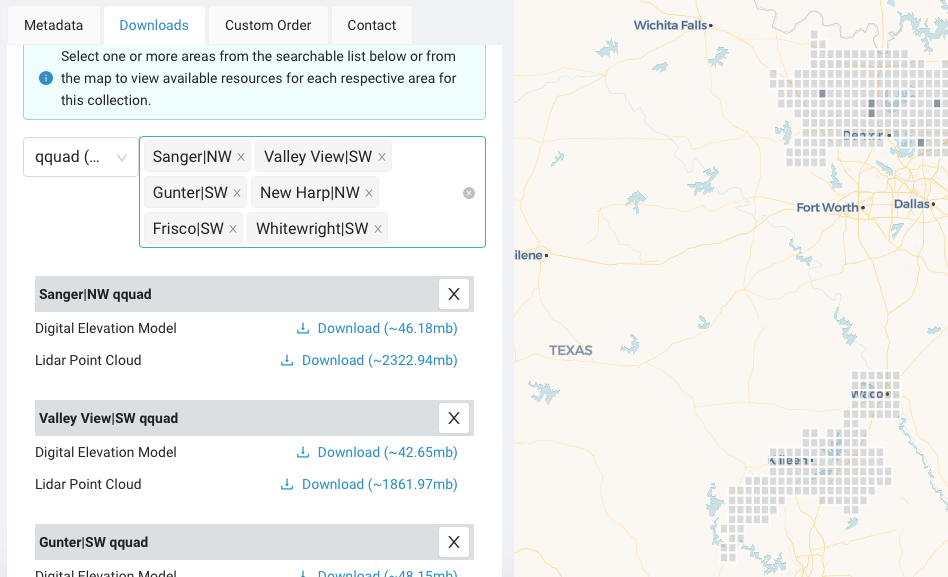
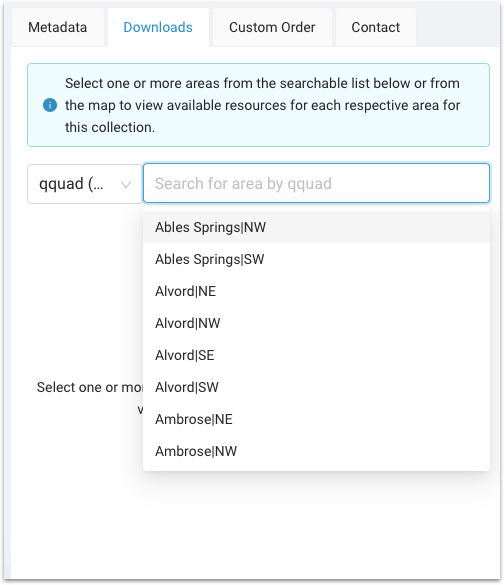
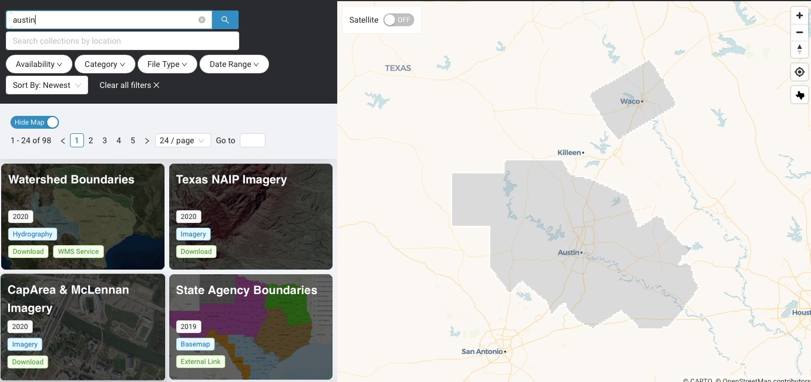

TX Natural Resources Info System
UX Designer
September 2020 - Present


Top: New (Beta) / Bottom: Old
DataHub 2.0
TNRIS DataHub is a platform for making Texas geospatial data available to the public. When hired in September 2020, my mission was to overhaul the outdated version of DataHub to something more intuitive and modern.
What I did:
- Created and faciliated survey to gather data
- Conducted interviews to gather in-depth qualitative feedback
- Heuristic evaluation
- Faciliated workshop activities to ideate and align on strategy
- Collaborated with dev team to wireframe and prototype
The beta version was just launched and we plan to begin early testing soon.
More screens:

New: Important info prioritized, metadata hidden but still available to power users

Old: Disorganized data, limited map functionality

New: Can select multiple areas

New: Can select counties from list (top requested feature)

New: Preview collection boundaries on map while searching